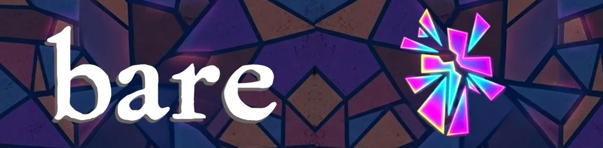

Bare: A Pop Opera
Identity, faith, and the fragility of youth collide in this driving pop-rock musical about standing in your truth.

Identity, faith, and the fragility of youth collide in this driving pop-rock musical about standing in your truth.